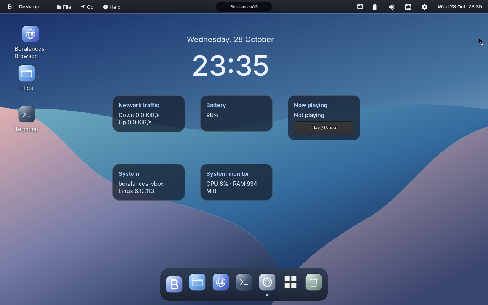

YOUR DESKTOP
Put things where they belong.
Keep files, folders and app shortcuts on the desktop. Move widgets by their titles and save the layout that works for you.
BORALANCESOS V1
A thoughtful Linux desktop for making, exploring and getting things done. Familiar windows. Your own workspace. A little more clarity.

A DESKTOP THAT FEELS CONSIDERED
Clear surfaces, useful controls and a workspace that adapts to the way you work.
YOUR DESKTOP
Keep files, folders and app shortcuts on the desktop. Move widgets by their titles and save the layout that works for you.
FAMILIAR CONTROLS
A visible dock, window controls, Alt+Tab switching and a Win+Tab desktop overview keep navigation close at hand.
LIQUID GLASS
Soft translucency and restrained highlights. Choose richer effects in Settings, or keep the Optimization profile for a lighter session.
BUILT TO DO MORE
BoralancesBrowser, Files, a terminal, developer tools and gaming support. Add software through Nix and inspect your hardware from the system tools.
A NEW BEGINNING
Boot from USB to explore the desktop. When you install, choose your own name, username, password and appearance.
Before you startCheck the display, network, sound and microphone in the live session.
Choose your account and confirm your password in the graphical setup.
Select a blank disk for guided partition setup, or use prepared root and EFI partitions. Review the destination carefully before installing.
CHOOSE YOUR STARTING POINT
Checking release availability…
One image for trying the desktop and installing it on a PC. Write the assembled ISO to a USB drive using an image-writing tool.
A small setup kit that creates a VM and boots the same ISO. Install into its new virtual disk and choose your account. It contains no personal VM session.
FOR YOUR NEXT BIG IDEA
Use a native PC installation to access NVIDIA or AMD Vulkan acceleration. AMD Radeon and Ryzen Radeon graphics use amdgpu with Mesa/RADV. On a compatible hybrid laptop, PRIME offload lets the integrated GPU handle the desktop and the NVIDIA GPU handle demanding applications.
Unreal Engine comes from Epic’s Linux downloads and requires an Epic account. There is no apt install unreal-engine command here. VirtualBox’s graphics adapter is not the laptop’s NVIDIA GPU.
# Check detected hardware
boralancesos gpu# Prepare a driver generation, then reboot
sudo boralancesos drivers nvidia install# Download Epic’s Linux build, then launch it
boralancesos unreal guideThe open NVIDIA module targets supported Turing/GTX 16-series and newer GPUs. Older hardware needs an appropriate driver branch. Epic recommends 32 GB RAM and at least 8 GB VRAM for a smooth editor experience.
A FEW WORDS. MORE POSSIBILITIES.
The boralancesos command brings useful system actions together. Package management uses Nix, not apt.
boralancesosboralancesos search blenderboralancesos install blenderboralancesos audioboralancesos profile performanceboralancesos helpBEFORE YOU BOOT
A 64-bit Intel or AMD PC, 4 GB RAM, a 16 GB or larger USB drive, and enough free installation space for the included tools. We recommend at least 40 GB for an installed system.
Includes Linux drivers, firmware, Mesa graphics and PipeWire audio. Compatibility varies by device and driver. Test Wi-Fi, audio and displays live before installing. Native hardware support needs testing beyond VirtualBox.
Back up your data. Use UEFI mode for installation. Secure Boot is not configured by this image. The installer can initialize an explicitly selected blank disk or use prepared partitions. It excludes disks with existing data from automatic partitioning.